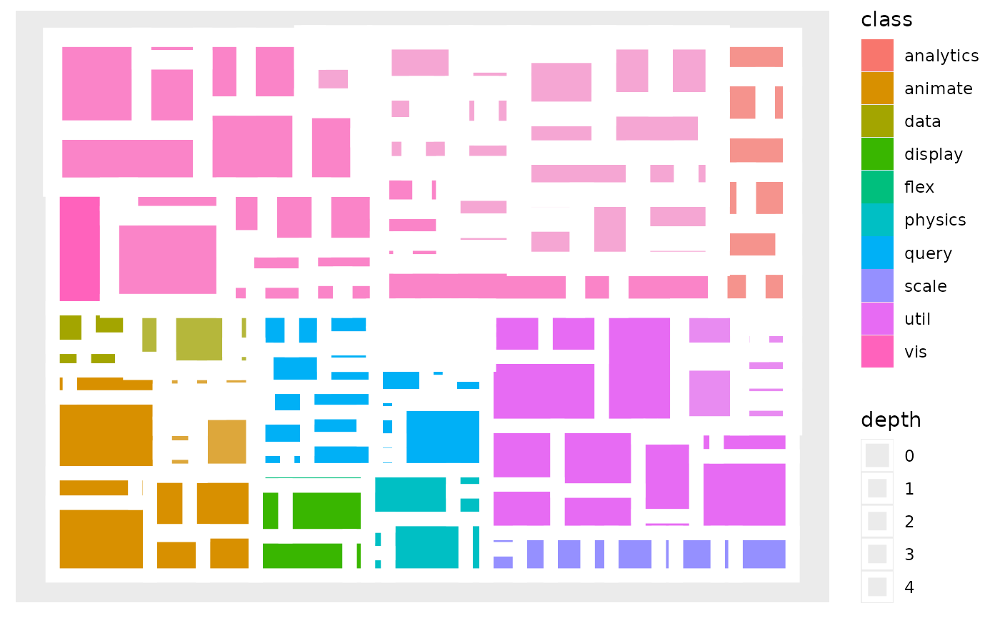

A treemap is a space filling layout that recursively divides a rectangle to
the children of the node. Often only the leaf nodes are drawn as nodes higher
up in the hierarchy would obscure what is below. geom_treemap is a
shorthand for geom_node_treemap as node is implicit in the case of
treemap drawing
geom_node_tile( mapping = NULL, data = NULL, position = "identity", show.legend = NA, ... )
| mapping | Set of aesthetic mappings created by |
|---|---|
| data | The data to be displayed in this layer. There are three options: If A A |
| position | Position adjustment, either as a string, or the result of a call to a position adjustment function. |
| show.legend | logical. Should this layer be included in the legends?
|
| ... | Other arguments passed on to |
geom_treemap understand the following aesthetics. Bold aesthetics are
automatically set, but can be overridden.
x
y
width
height
alpha
colour
fill
size
stroke
filter
Other geom_node_*:
geom_node_arc_bar(),
geom_node_circle(),
geom_node_point(),
geom_node_range(),
geom_node_text(),
geom_node_voronoi()
Thomas Lin Pedersen
# Create a graph of the flare class system library(tidygraph) flareGraph <- tbl_graph(flare$vertices, flare$edges) %>% mutate( class = map_bfs_chr(node_is_root(), .f = function(node, dist, path, ...) { if (dist <= 1) { return(shortName[node]) } path$result[[nrow(path)]] }) ) ggraph(flareGraph, 'treemap', weight = size) + geom_node_tile(aes(fill = class, filter = leaf, alpha = depth), colour = NA) + geom_node_tile(aes(size = depth), colour = 'white') + scale_alpha(range = c(1, 0.5), guide = 'none') + scale_size(range = c(4, 0.2), guide = 'none')